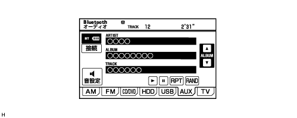

| HDD Navigation Bluetooth Audio Mode Functions |
| ● |
| ● |
Automatic connection of the Bluetooth portable audio player to the on-board unit can be set to "On" or "Off" from "Bluetooth Audio Settings" on the Setup/Edit (Audio) screen. When set to automatic, the on-board unit automatically makes a Bluetooth connection with the registered (selected) portable audio player each time the power (ACC or IG) is turned ON.
|
| ● |
When the portable audio player connected to the on-board unit supports AVRCP (Audio/Video Remote Control Profile) Ver.1.3 or higher, the title can be displayed on the screen.
|
| HINT |
| *1 |
|
||
| *2 |
Including audio players in mobile phones.
|

 |